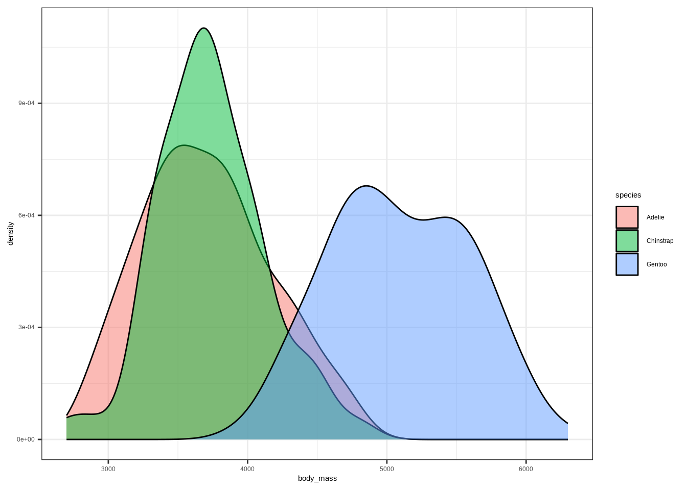

Linear Regression Models
1 Setup
1.1 Google Colab
Copy the following code and put it in a code cell in Google Colab. Only do this if you are using a completely new notebook.
# This code will load the R packages we will use
install.packages(c("rcistats", "taylor",,
repos = c("https://inqs909.r-universe.dev",
"https://cloud.r-project.org")))
library(rcistats)
library(tidyverse)
library(taylor)1.2 Using the templates: what to change
DATA→ your data frame/tibble (e.g.,penguins)Y→ the outcome variable (e.g.,body_mass_g)X,X1,X2, …,Xp→ predictor variables (e.gflipper_length_mm,species)- For categorical predictors: ensure the predictor is a factor (use
factor(X)if needed).
2 Visualizing Variables
2.1 Scatter Plot (Continuous vs Continuous)
A scatter plot reveals association, trend direction, and form.
Template:
ggplot(DATA, aes(x = VAR1, y = VAR2)) +
geom_point()Example:
ggplot(penguins, aes(x = flipper_len, y = body_mass)) +
geom_point()
2.2 Multi Densigy Plot (Continuous vs Categorical)
A density plot is a way to visualize the distribution of a continuous variable — it shows where data values are concentrated (dense) and where they are sparse.
Template:
ggplot(DATA, aes(x = NUM, color = CAT)) +
geom_density()Example:
ggplot(penguins, aes(x = flipper_len, color = species)) +
geom_density()
Template:
ggplot(DATA, aes(x = NUM, fill = CAT)) +
geom_density()Example:
ggplot(penguins, aes(x = flipper_len, fill = species)) +
geom_density()
Template:
ggplot(DATA, aes(x = NUM, group = CAT)) +
geom_density()Example:
ggplot(penguins, aes(x = flipper_len, group = species)) +
geom_density()
2.3 Multi Box Plot (Continuous vs Categorical)
A box plot summarizes median, quartiles, and potential outliers.
Template:
ggplot(DATA, aes(x = NUM, y = CAT)) +
geom_boxplot()Example:
ggplot(penguins, aes(x = flipper_len, y = species)) +
geom_boxplot()
3 Modeling Relationships
3.1 Explaining variation
This is the process of trying to reduce unexplained variation in an outcome by using informative predictors — think getting it less wrong with an educated guess.
ggplot(penguins, aes(body_mass)) +
geom_density()If we know some information, we can get less wrong over time.
# Same variable, grouped by a category (species)
ggplot(penguins, aes(body_mass, fill = species)) +
geom_density(alpha = .5)
3.2 A simple model (intercept-only)
We believe the outcome (\(Y\)) is generated by an unknown data generated process (\(DGP_1\)): \(Y \sim DGP_1\). A minimal model says all outcomes are generated from a number (labeled as \(\beta_0\)) plus or minus some error (\(\varepsilon\)):
\[ Y = \beta_0 + \varepsilon \]
This is known as a simple model and the errors are simulated by a different DGP \(\varepsilon \sim DGP_2\). The simple model is unknown, so we construct and estimated simple model for our best guess on how the data is generated:
\[ \hat Y = \hat\beta_0 \]
The carats above the letters are known as hats, which means best guess.
Observed vs. estimated:
- Observed \(Y = \beta_0 + \varepsilon\)
- Estimated \(\hat Y = \hat\beta_0\)
3.2.1 Fitting Simple Model
Template:
lm(Y ~ 1, data = DATA)DATA→ your data (e.g.,penguins).
Y→ the outcome variable (e.g.,body_mass_g).
Example:
# Fit the null (intercept-only) model
m0 <- lm(body_mass ~ 1, data = penguins)
m0Call: lm(formula = body_mass ~ 1, data = penguins)
Coefficients: (Intercept)
4207
3.3 Linear regression model with one predictor
Model form:
\[ Y = \beta_0 + \beta_1 X + \varepsilon, \quad \hat Y = \hat\beta_0 + \hat\beta_1 X. \]
# Scatter plot
ggplot(penguins, aes(flipper_len, body_mass)) +
geom_point()
# Add a least-squares line
ggplot(penguins, aes(flipper_len, body_mass)) +
geom_point() +
stat_smooth(method = "lm", se = FALSE)
# Fit the model
m1 <- lm(body_mass ~ flipper_len, data = penguins)
m1Call: lm(formula = body_mass ~ flipper_len, data = penguins)
Coefficients: (Intercept) flipper_len
-5872.09 50.15
Template:
lm(Y ~ X, data = DATA)4 Categorical predictors (dummy variables)
When we use a categorical predictor in a regression, R needs to convert the categories into numbers. This is done using dummy variables (also called indicator variables).
4.1 General idea
- Suppose we have a categorical variable with C categories.
- We create C − 1 dummy variables, each taking value:
1if the observation belongs to that category
0otherwise
- The category without a dummy variable becomes the reference (baseline) group.
Example: Penguin species:
The species variable has 3 categories: Adelie, Chinstrap, Gentoo.
We create two dummy variables:
- \(D_1\): 1 if Chinstrap, 0 otherwise
- \(D_2\): 1 if Gentoo, 0 otherwise
- Adelie is the reference (when both \(D_1 = 0, D_2 = 0\))
| Species | \(D_1\) (Chinstrap) | \(D_2\) (Gentoo) |
|---|---|---|
| Adelie | 0 | 0 |
| Chinstrap | 1 | 0 |
| Gentoo | 0 | 1 |
4.2 Regression model with dummy variables
If we model penguin body mass (\(Y\)) with species:
\[ \hat Y_i = \beta_0 + \beta_1 D_{1i} + \beta_2 D_{2i} \]
- \(\beta_0\): mean of Adelie (reference group)
- \(\beta_1\): difference in mean body mass between Chinstrap and Adelie
- \(\beta_2\): difference in mean body mass between Gentoo and Adelie
Predictions:
- Adelie: \(\hat Y = \beta_0\)
- Chinstrap: \(\hat Y = \beta_0 + \beta_1\)
- Gentoo: \(\hat Y = \beta_0 + \beta_2\)
4.3 R Implementation
R automatically creates dummy variables when you use a factor in lm().
The first level of the factor is used as the reference group (by default).
# Fit model with species (factor) as predictor
m <- lm(body_mass ~ species, data = penguins)
summary(m)Call: lm(formula = body_mass ~ species, data = penguins)
Residuals: Min 1Q Median 3Q Max -1142.44 -342.44 -33.09 307.56 1207.56
Coefficients: Estimate Std. Error t value Pr(>|t|)
(Intercept) 3706.16 38.14 97.184 <2e-16 speciesChinstrap 26.92 67.65 0.398 0.691
speciesGentoo 1386.27 56.91 24.359 <2e-16 — Signif. codes: 0 ‘’ 0.001 ’’ 0.01 ’’ 0.05 ‘.’ 0.1 ’ ’ 1
Residual standard error: 460.8 on 330 degrees of freedom Multiple R-squared: 0.6745, Adjusted R-squared: 0.6725 F-statistic: 341.9 on 2 and 330 DF, p-value: < 2.2e-16
Templates:
lm(Y ~ X, data = DATA) # if X is already a factor
lm(Y ~ factor(X), data = DATA) # force X to be treated as factor4.4 Group Statistics
The function num_by_cat_stats() quickly computes descriptive statistics of a numerical variable grouped by a categorical variable.
Template:
num_by_cat_stats(DATA, NUM, CAT)DATA: the data frame (e.g.,penguins)NUM: the numerical variable you want to summarize (e.g.,body_mass_g)CAT: the categorical variable that defines groups (e.g.,species)
Example:
num_by_cat_stats(penguins, body_mass, species)Categories min q25 mean median q75 max sd var iqr 1 Adelie 2850 3362.5 3706.164 3700 4000 4775 458.620 210332.4 637.5 2 Chinstrap 2700 3487.5 3733.088 3700 3950 4800 384.335 147713.5 462.5 3 Gentoo 3950 4700.0 5092.437 5050 5500 6300 501.476 251478.3 800.0 missing 1 0 2 0 3 0
5 Strength & correlation
Correlation (two numerical variables): \(-1 \le r \le 1\). For simple linear regression, \(R^2 = r^2\).
cor(penguins$body_mass, penguins$flipper_len)[1] 0.8729789
# R^2 helper
r2(lm(body_mass ~ flipper_leng, data = penguins))#> Error:
#> ! object 'flipper_leng' not foundTemplate:
# Correlation
cor(DATA$Y, DATA$X)
## R-Squared
xlm <- lm(Y ~ X, data = DATA);
r2(xlm)6 Prediction
Model: \(\hat Y = \hat\beta_0 + \hat\beta_1 X\). Supply new X to get a prediction \(\hat Y\).
Template:
m <- lm(Y ~ X, data = DATA)
ndf <- data.frame(X = VAL)
predict(m, newdata = ndf)Examples:
xlm1 <- lm(body_mass ~ species, data = penguins)
predict(xlm1, newdata = data.frame(species = "Gentoo")) 1 5092.437
xlm2 <- lm(body_mass ~ flipper_len, data = penguins)
predict(xlm2, newdata = data.frame(flipper_len = 190)) 1 3657.028
7 Multiple linear regression (MLR)
Model: \(Y = \beta_0 + \beta_1 X_1 + \cdots + \beta_p X_p + \varepsilon\)
Template:
lm(Y ~ X1 + X2 + ... + Xp, data = DATA)Example: danceability ~ mode_name + valence + energy
# Example: danceability ~ mode_name + valence + energy
lm(danceability ~ mode_name + valence + energy, data = taylor_album_songs)Call: lm(formula = danceability ~ mode_name + valence + energy, data = taylor_album_songs)
Coefficients: (Intercept) mode_nameminor valence energy
0.53816 0.08386 0.17554 -0.05944
7.1 Adjusted \(R^2\)
\[R^2 = 1 - \frac{\text{Var(resid)}}{\text{Var}(Y)}, \quad R^2_{adj} = 1 - \Big(\frac{\text{Var(resid)}}{\text{Var}(Y)}\Big) \cdot \frac{n-1}{n-k-1}\]
m <- lm(danceability ~ mode_name + valence + energy, data = taylor_album_songs)
ar2(m)[1] 0.09148268
8 Appendix: quick templates (copy‑paste)
8.1 Simple Model
lm(Y ~ 1, data = DATA)DATA→ your data frame (e.g.,penguins)Y→ the outcome variable (e.g.,body_mass)
8.2 Simple linear regression
lm(Y ~ X, data = DATA)DATA→ your data frame (e.g.,penguins)Y→ the outcome variable (e.g.,body_mass)X→ predictor variables (e.gflipper_length_mm)
8.3 SLR: Categorical predictor
lm(Y ~ X, data = DATA) DATA→ your data frame (e.g.,penguins)Y→ the outcome variable (e.g.,body_mass)X→ predictor variables (e.gspecies)
8.4 SLR: Categorical predictor (Create Factor)
lm(Y ~ factor(X), data = DATA) # coerce X to factorDATA→ your data frame (e.g.,penguins)Y→ the outcome variable (e.g.,body_mass)X→ predictor variables (e.gspecies)
8.5 Numerical Statistics by Categories
num_by_cat_stats(DATA, NUM, CAT)DATA: the data frame (e.g.,penguins)NUM: the numerical variable you want to summarize (e.g.,body_mass)CAT: the categorical variable that defines groups (e.g.,species)
8.6 Correlation
cor(DATA$Y, DATA$X, use = "complete.obs")DATA→ your data frame (e.g.,penguins)Y→ the outcome variable (e.g.,body_mass)X→ predictor variables (e.gflipper_len)
8.7 \(R^2\)
m <- lm(Y ~ X, data = DATA)
r2(m)DATA→ your data frame (e.g.,penguins)Y→ the outcome variable (e.g.,body_mass)X→ predictor variables (e.gflipper_len)
8.8 Multiple linear regression
lm(Y ~ X1 + X2 + ... + Xp, data = DATA)DATA→ your data frame (e.g.,penguins)Y→ the outcome variable (e.g.,body_mass)X1,X2, …,Xp→ predictor variables (e.gflipper_len,species)
8.9 Adjusted \(R^2\)
# Adjusted R^2
m <- lm(Y ~ X1 + X2 + ... + Xp, data = DATA)
ar2(m)DATA→ your data frame (e.g.,penguins)Y→ the outcome variable (e.g.,body_mass)X1,X2, …,Xp→ predictor variables (e.gflipper_len,species)
8.10 Prediction: SLR
m <- lm(Y ~ X, data = DATA)
ndf <- data.frame(X = VAL)
predict(m, newdata = ndf)DATA→ your data frame (e.g.,penguins)Y→ the outcome variable (e.g.,body_mass)X→ predictor variables (e.gflipper_len)
8.11 Prediction: MLR
m <- lm(Y ~ X1 + X2 + ... + Xp, data = DATA)
ndf <- data.frame(X1 = VAL1, X2 = VAL2, ..., Xp = VALp)
predict(m, newdata = ndf)DATA→ your data frame (e.g.,penguins)Y→ the outcome variable (e.g.,body_mass)X1,X2, …,Xp→ predictor variables (e.gflipper_len,species)VAL1,VAL2, …,VALp→ predictor values (e.g150,"Gentoo")
8.12 Scatter Plot
ggplot(DATA, aes(x = VAR1, y = VAR2)) +
geom_point()DATA→ the name of your dataset (e.g.,penguins).VAR1→ a single numerical variable (e.g.,body_mass).VAR2→ a single numerical variable (e.g.,flipper_len).
8.13 Scatter Plot + trend line
ggplot(DATA, aes(x = VAR1, y = VAR2)) +
geom_point() +
geom_smooth(method = "lm", se = TRUE)DATA→ the name of your dataset (e.g.,penguins).VAR1→ a single numerical variable (e.g.,body_mass).VAR2→ a single numerical variable (e.g.,flipper_len).
8.14 Multiple Density Plot (Continous vs Categorical)
ggplot(DATA, aes(x = NUM, color = CAT)) +
geom_density() DATA→ the name of your dataset (e.g.,penguins).NUM→ a single numerical variable (e.g.,body_mass).CAT→ a single categorical variable (e.g.,species).
8.15 Multiple Box Plots (Continous vs Categorical)
ggplot(DATA, aes(x = NUM, y = CAT)) +
geom_boxplot() DATA→ the name of your dataset (e.g.,penguins).NUM→ a single numerical variable (e.g.,body_mass).CAT→ a single categorical variable (e.g.,species).